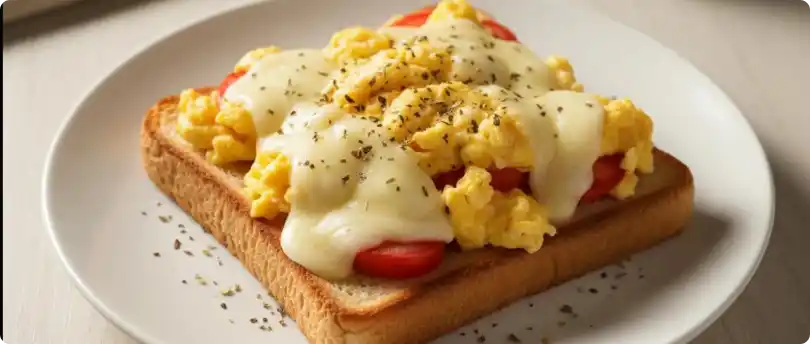
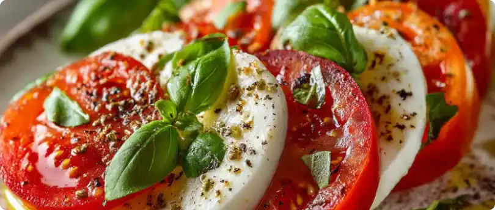
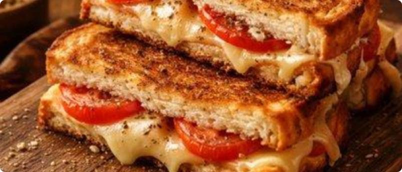
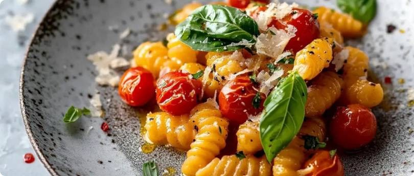
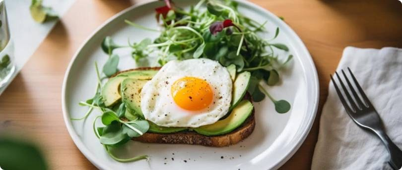
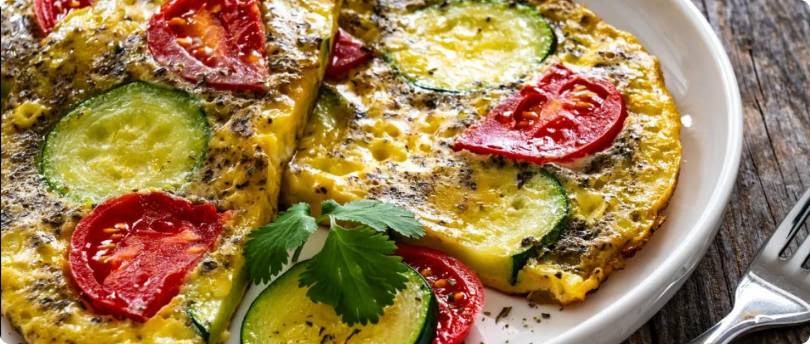

ЗавтракОмлет с помидорами и сыром
Ингредиенты:
- Яйца — 2 шт.
- Помидор — 1 шт.
- Сыр — 30 г
- Соль, перец — по вкусу
Введите ингредиенты, а ИИ подберёт рецепт

ЗавтракИнгредиенты:

ОбедИнгредиенты:

ПерекусИнгредиенты:

УжинИнгредиенты:

ЗавтракИнгредиенты:

ОбедИнгредиенты:
Введи продукты, которые есть дома, и найди идею для вкусного блюда.